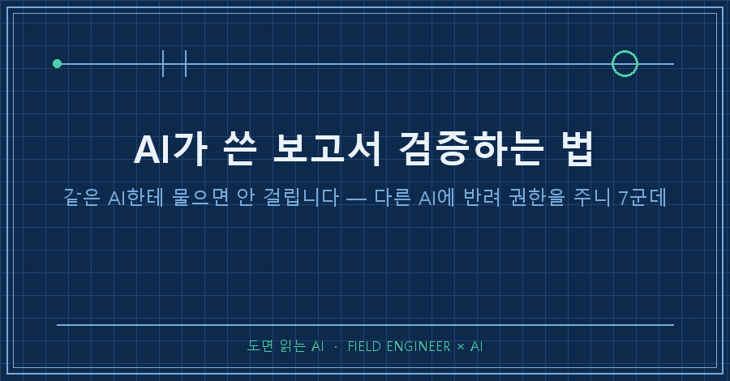
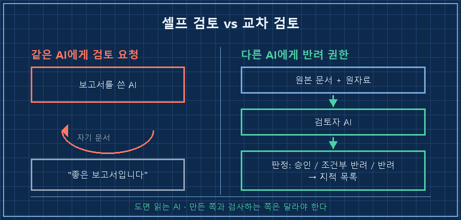
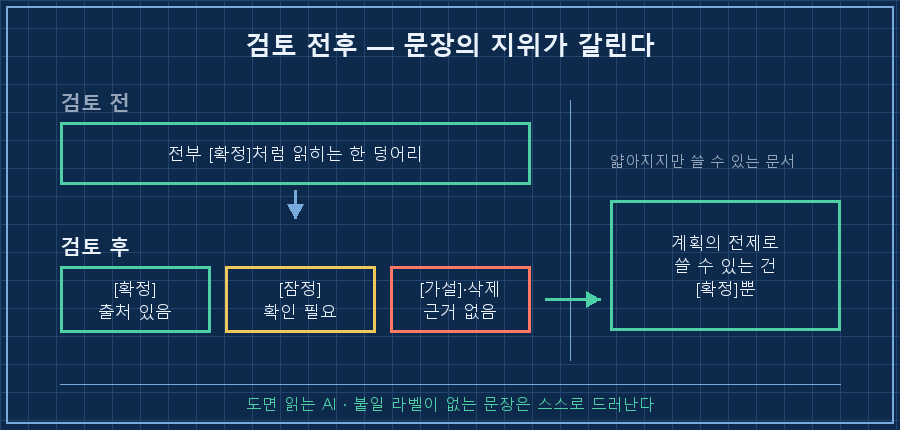
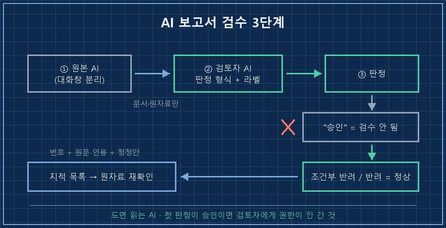

제 보고서가 반려당했어요.
반려한 게 사람이 아니라 AI였고요.
방법부터 적어둘게요.
AI가 쓴 보고서 검증은 그 문서를 만든 AI 말고 다른 AI에게, 검토가 아니라 반려 권한을 줘야 작동합니다. "검토해줘"는 칭찬을 부르고, "승인·조건부 반려·반려 중 하나로 판정해"는 지적을 부르거든요.
지난 8월 8일에 그 한 줄 차이로 7군데를 잡아냈습니다.
제 일에는 검사라는 공정이 있어요. 만든 사람이 아니라 다른 사람이, 다른 자료를 들고 대조하는 일이요. 그 바닥에서 15년 됐습니다.
그런데 정작 AI가 만들어준 문서는 검사 없이 읽고 넘기고 있더라고요.
1. AI 여섯을 굴려 조사시켰는데, 위인전이 왔어요
개인적으로 사업 공부를 하고 있어요. 남들이 뭘 팔아서 먹고사는지 사례를 모으는 중입니다.
AI 여섯을 동시에 굴려 30건을 조사시켰는데, 받아보니 위인전이었어요.
누가 몇 년에 창업해서 뭘 겪고 성공했다는 이야기가 30개.
읽으면 재밌는데, 제가 알고 싶은 건 한 줄도 없었습니다.
그래서 질문지를 갈아엎고 다시 돌렸습니다.
[1차 — 위인전이 나온 질문]
창업 연도 / 창업 계기 / 성장 과정 / 현재 위상
[2차 — 다시 짠 질문]
무엇을 파는가 (제품 한 줄)
누가, 왜 사는가 (대체재 대비 우위)
돈 버는 메커니즘 (실단가·수수료율·고객수)
취약점 (이 구조가 깨지는 조건)같은 사례, 같은 AI인데 결과물이 딴판이더라고요!
가격표와 수수료율이 채워진 표가 나왔고, 저는 이제 됐다고 생각했습니다.
2. 잘 나온 보고서가 제일 위험했어요
여기가 이번에 제일 크게 배운 부분이에요.
표가 빽빽하게 채워진 문서는 다 검증된 것처럼 보입니다. 저는 이걸 다음 단계 계획의 전제로 쓸 참이었어요.
멈춰 세운 건 습관이었어요.
현장에서 만든 사람한테 "이거 맞죠?"라고 묻는 건 검사가 아니거든요. AI도 똑같습니다. 자기가 쓴 문서를 자기한테 검토시키면 요약을 다시 해줄 뿐이에요.

3. 검토자에게 판정 권한과 공격 목록을 줬어요
그래서 다른 AI를 검토자 자리에 앉혔습니다.
이때 준 게 두 가지예요. 문장마다 붙일 라벨 규칙과, 공격해야 할 항목 목록이요.
[라벨 규칙 — 문장마다 하나씩]
[확정 사실] 원문·1차 자료로 뒷받침된 것
[잠정 사실] 근거는 있으나 해석·최신성 확인이 필요한 것
[가설] 가능한 설명. 반증 조건을 함께 적을 것
[미확인] 결론에 영향을 주는데 자료가 없는 것
[검토자가 공격할 것 — 일부]
- 사례에서 생존자 편향을 제거했는가
- 숫자와 업계 관행에 출처가 있는가
- 결론을 정해두고 지지 자료만 찾지 않았는가핵심은 라벨이에요.
"근거 있어?"라고 물으면 AI는 있다고 답합니다. 그런데 모든 문장에 넷 중 하나를 강제로 붙이라고 하면 붙일 라벨이 없는 문장이 스스로 드러나거든요.
4. 지적 7개 중 제일 아팠던 건 믿고 싶었던 숫자였어요
판정은 조건부 반려였습니다.
제 개인 이력 수치 하나는 뺐고, 나머지는 문서 표지에 적힌 그대로 옮겨봅니다.
v2.1 = v2에 대한 검토자 조건부 반려(7개 지적) 보정판
① 핵심 15사례 공통 스키마 표 추가
② '가격 양극단' 폐기 → 조합 가설로 재작성
③ '전원 선축적' 강등 (즉시 과금형 병존 확인)
④ 사례 하나의 시간 근거 오류 정정 (일일 투입 미확인)
⑤ '중앙값 3~5년' 폐기 → 이축 시간표 재계산
⑥ 실패 유형 집계 3+2로 정정④번이 제일 아팠어요.
어떤 사례가 "하루 1~2시간으로 해냈다"고 제 보고서에 적혀 있었거든요. 저한테 하루에 쓸 수 있는 시간이 딱 그만큼이라, 제일 붙잡고 싶던 문장이었어요.
원자료를 다시 뒤지니 그 사례에는 일일 투입시간이 아예 없었습니다. "퇴근 후·주말"이라는 서술만 있었고 시간 수치는 채워 넣어진 것이었어요..
30건을 통틀어 하루 투입시간이 확인된 건 주 10시간짜리 하나뿐이었고요.
| 검토 전 (내 보고서) | 지적 | 정정 후 |
|---|---|---|
| 가격은 양극단만 생존 | 소표본을 전체로 확장 | 폐기 → 조합 가설 |
| 전원이 자산을 먼저 쌓음 | 즉시 과금형 반례 존재 | [가설]로 강등 |
| 하루 1~2시간이면 가능 | 원자료에 일일 시간 없음 | 근거 없음, 삭제 |
| 도달 중앙값 3~5년 | 산정식·시간축 불명 | 폐기 → 재계산 |
문서는 얇아졌어요.. 대신 남은 문장은 갖다 쓸 수 있게 됐습니다.

5. 그래서 검수 순서를 3단계로 고정했어요
지금은 AI가 만든 문서를 쓰기 전에 이 순서를 밟습니다. 2026년 8월 기준이고, 서로 다른 AI 서비스 두 개면 됩니다.
1. 원본과 검토자를 분리한다. 다른 서비스, 최소한 새 대화창으로. 원본과 원자료만 넘기고 앞선 결론은 넘기지 않아요.
2. 판정 형식을 먼저 못 박는다. "승인 / 조건부 반려 / 반려 중 하나로 판정하고, 지적은 번호 + 원문 인용 + 정정안으로 달아라." 형식을 안 주면 감상문이 돌아옵니다.
3. 라벨을 강제한다. 문장마다 [확정]·[잠정]·[가설]·[미확인] 중 하나를 붙이게 하고, [확정]에는 출처를 요구합니다.

확인 방법도 적어둘게요.
첫 판정이 "승인"으로 나오면 검수가 안 된 겁니다. 사람 문서든 AI 문서든 초안이 한 번에 통과되는 일은 거의 없어요. 승인이 떴다면 검토자에게 권한이 안 갔다고 보고 판정 형식부터 다시 주는 게 맞습니다.
이런 게 궁금하실 것 같아요
Q. 같은 AI의 새 대화창으로도 되나요?
어느 정도는 됩니다. 앞선 맥락이 안 붙으니 자기 글이라는 편향이 줄거든요. 다만 저는 다른 회사 AI를 씁니다. 학습한 자료가 다르면 놓치는 지점도 다르더라고요.
Q. AI 검토자가 지적한 게 틀렸으면요?
있습니다. 그래서 지적을 그대로 반영하지 않고 원자료로 돌아가 확인했어요. 검토자의 역할은 판결이 아니라 어디를 다시 볼지 짚어주는 것까지입니다. 실제로 지적 중 일부는 제가 근거를 대고 유지했어요.
Q. 매번 이렇게 하면 번거롭지 않나요?
전부에 하지는 않아요. 기준은 하나입니다. 그 문서가 다음 단계의 전제로 쓰이는가. 읽고 버릴 요약은 그냥 읽어요. 계획이나 결정의 바닥에 깔릴 문서라면 검토 한 번이 나중에 뜯어고치는 시간보다 훨씬 쌉니다!
정리하면 이래요.
AI가 쓴 보고서 검증에서 바꿀 건 질문의 강도가 아니라 검토자의 권한입니다.
같은 AI한테 "이거 맞아?"라고 백 번 묻는 것보다, 다른 AI에게 반려할 자격을 한 번 주는 게 낫더라고요.
제일 붙잡고 싶은 숫자가 제일 먼저 무너진다는 것도 이번에 배웠습니다..
AI한테 반려당한 문서와 보정판을 나란히 놓고 뭐가 바뀌었는지 정리한 기록은 makefield.ai에 올려둡니다.
---
현장 엔지니어를 위한 AI 도입·자동화 문의: makefield.ai
태그: #AI가쓴보고서검증 #AI리서치검증 #AI팩트체크 #AI교차검토 #AI할루시네이션 #AI프롬프트작성법 #AI보고서 #챗GPT검증 #AI에이전트 #AI리서치 #AI활용법 #생성형AI #AI로일하기 #현장엔지니어 #도면읽는AI